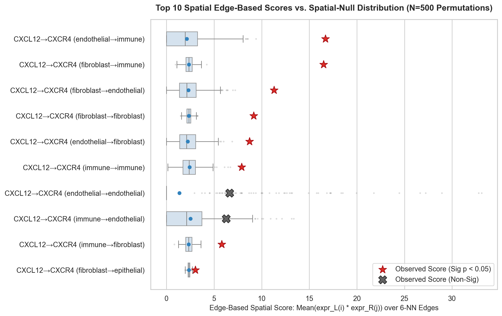
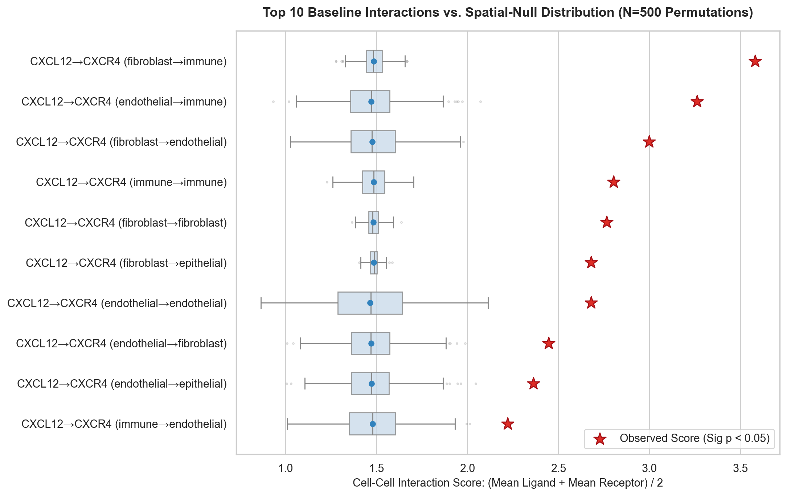
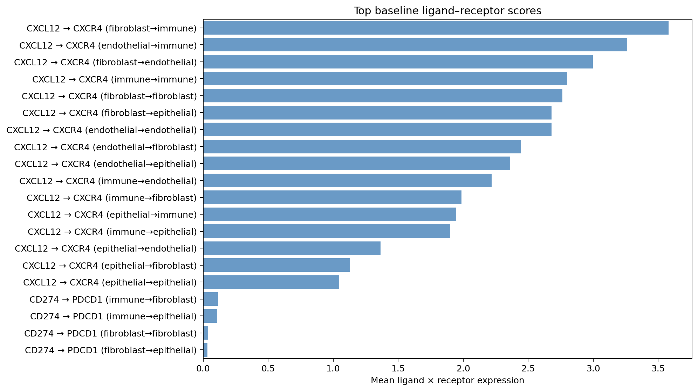
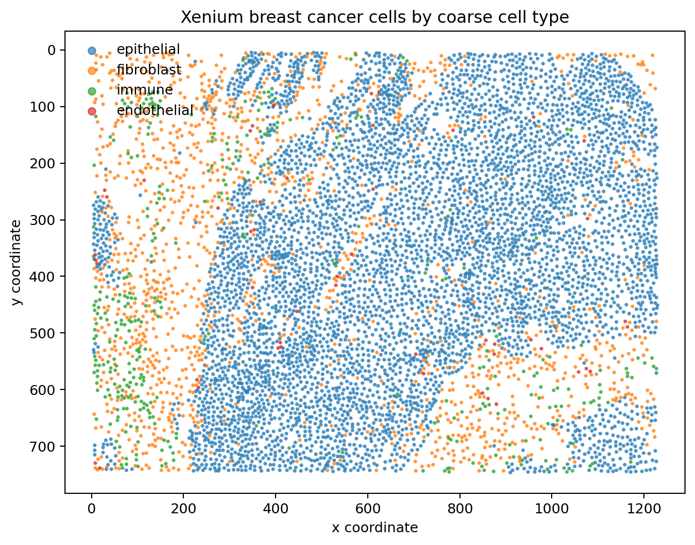
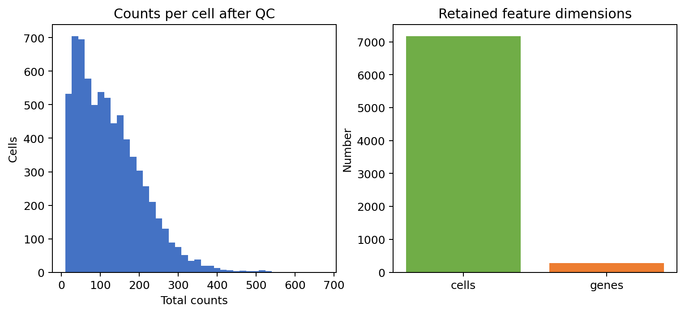

Spatial Cell–Cell Communication
Calibrated Edge-Based Null Models
Standard spatial transcriptomics communication tools (such as CellPhoneDB and default Squidpy ligrec)
evaluate cluster-marginal means—a score mathematically identical to dissociated scRNA-seq that never references
the spatial graph. By formulating an edge-based interaction score over the 42,978 directed edges in the tissue's
6-NN graph and calibrating against a 500-permutation spatial null model, this research demonstrates that
9 out of 17 previously significant interactions are false positives unmasked by true spatial contacts.
The Spatial Verdict Flip Matrix: 9 False Positives Unmasked
Comparing the conventional compositional null model (cluster-marginal mean) against the spatial-edge null model across all 22 candidate interactions reveals that more than half (9 of 17) of the interactions flagged as "significant" by cluster means collapse to non-significant once physical cell-to-cell contact is enforced.
Interactive Edge Score vs. Compositional Score
Bars show edge-based communication score (colored by sender). Dots indicate cluster-mean compositional score.
Zero-Variance Diagnostic: Why CD274→PDCD1 edge_null_std == 0.0
Across all 500 label permutations, all 6 CD274→PDCD1 interaction combinations exhibited an exact observed score of 0.0, null mean of 0.0, and null standard deviation of 0.000000. The diagnostic confirmed both the biological and mathematical cause:
1. Biological Extreme Dropout
PDCD1 is detected in only 5 of 7,163 cells (0.0698%) across the entire tissue (0 in immune, 0 in endothelial, 1 in epithelial, 4 in fibroblast). CD274 is detected in 53 of 7,163 cells (0.7399%). Across all 42,978 directed edges in the spatial graph, exactly 0 edges connect any CD274+ cell to any PDCD1+ cell.
2. Mathematical Invariance Under Permutation
Because the label-permutation null model holds single-cell gene expression fixed on coordinates and shuffles only cell-type labels, the 42,978-element edge product vector remains identically zero across every permutation. Any subset of edges selected under any permuted label pair has mean 0.0, making variance identically 0.0.
| Gene | Cell Type | Total Cells | Cells Detected (>0) | Detection Rate | Mean Expression |
|---|
results/cd274_pdcd1_detection_diagnostic.csv
Independent check: immune→fibroblast confirmed at 962 edges, mean score 0.000000
Thesis High-Resolution Figure Gallery
All publication-ready vector and raster figures generated by the pipeline. Click any figure preview to open the high-resolution lightbox viewer.
Verdict Flip Comparison
Two-panel visualization showing z-score shifts from compositional to edge null (left) and binary significance transitions unmasking 9 false positives (right).

Spatial-Edge Null Permutations
Observed edge-based communication scores vs. empirical 500-permutation null distributions across the top 10 interactions.

Compositional Null Permutations
Initial spatial null test on Squidpy cluster-marginal mean scores (N=500), identifying low epithelial signaling but failing to test edge contacts.

Top Baseline L–R Interactions
Ranked horizontal bar plot of top candidate ligand-receptor pairs by uncalibrated marginal mean score.

In Situ Spatial Cell Map
Microscopic spatial layout of epithelial, immune, endothelial, and fibroblast cells across the 2-FOV human breast cancer tissue.

Quality Control & Counts
Distribution of transcripts per cell, detected genes, and filtration funnel retaining 7,163 high-quality cells (98.5%).
Explore 7,163 Cells in Real Spatial Coordinates
Rendered live in HTML5 Canvas from the processed AnnData coordinates. Drag to pan, scroll to zoom, hover for cell information, and toggle cell-type layers.
Cell-Type Composition
Marker-score annotation over 7,163 cells.
Quality Control Metrics
How the Edge-Based Spatial Null Model Works
A systematic comparison between dissociated cluster-marginal scoring and true spatial-graph edge-based scoring.
In Situ Graph Construction
Cell centroids from Xenium coordinates are connected via a 6-nearest neighbor spatial graph. Directed edges (i → j) represent physical tissue contact potential.
Edge Score Formulation
For sender S and receiver R, the edge score is the mean expression product across edges connecting S cells to R cells: mean(expr_L[i] * expr_R[j]).
Label-Permutation Null
Cell-type labels are permuted across cells holding spatial coordinates, graph edges, and single-cell expression fixed (N=500, seed 42) per CONCISE/SOAAR.
Vectorized Benchmark
Precomputing the 42,978 edge product vector once per L–R pair eliminates edge loops, executing 500 full permutations in ~20 seconds.
Interactive Data Explorer
Query, filter, and inspect the complete pipeline CSV outputs. Switch tabs to explore the null model comparison, the CD274–PDCD1 diagnostic, or the baseline ranking.
Chronological Progress & Roadmap
Documented trajectory of the thesis research, from v0 baseline infrastructure to spatial-edge calibration and upcoming Steiner tree optimization.
v0 Baseline Pipeline & Public Data Acquisition
Acquired and verified official 10x Genomics Xenium breast cancer dataset (379 MB, SHA-256 verified).
Implemented end-to-end reproducible baseline in src/run_prototype.py: count filtering, normalization,
Leiden clustering (res=0.5), marker-based cell typing, 6-NN spatial connectivity graph, and initial Squidpy ligrec ranking.
Spatial-Null Permutation Model (Compositional Null, N=500)
Researched CONCISE (Zhao et al., 2026) and SOAAR (Khatri et al., 2026). Implemented label-permutation null model in src/spatial_null.py
shuffling cell labels across cells while holding spatial coordinates and expression fixed (N=500, seed 42).
Reproducibility check verified identical SHA-256 hash across consecutive runs. Exposed critical limitation: cluster-marginal scoring ignores spatial edges.
Spatial-Edge Null Model & Discovery of 9 Verdict Flips
Implemented true edge-based spatial LR communication score in src/spatial_edge_score.py over 42,978 graph edges.
Vectorized edge-product precomputation ran 500 permutations in ~20 seconds. Merged comparison against compositional null unmasked
9 verdict flips (false positives collapsed to non-significant). Two-run reproducibility test confirmed byte-for-byte identical CSV output (SHA-256: b4c3531d...44f).
Diagnostic Resolution of CD274–PDCD1 Zero-Variance
Diagnosed why edge_null_std == 0.0 for all CD274–PDCD1 rows. Discovered that PDCD1 is detected in only 5 of 7,163 cells (0.07%),
and across all 42,978 spatial graph edges, exactly 0 connect a CD274+ cell to a PDCD1+ cell. Independent cross-check confirmed 962 immune→fibroblast
edges with 0.000000 score. Output saved to results/cd274_pdcd1_detection_diagnostic.csv.
Spatial Prize-Collecting Steiner Tree (S-PCST) & Response Pathways
Formulate graph optimization on the calibrated edge-score communication network to extract a minimal, high-confidence subnetwork anchored to downstream transcriptional response signatures in receiver cells.
100% Deterministic Reproducibility
Every number, figure, and diagnostic row is programmatically reproducible under fixed random seed 42 with verified cryptographic hashes.
Verified Cryptographic Hashes
b4c3531d0c796784189b9a010899e8815041cd560b5527d572bff37f54dba44f
cafa5b17a920bab1f3b613d80c04942a06548ec28faf3b16eb919463a3529666
14cb5c26f3eed89f9018fac3128c5ed61ec1f7e5f0052000fb56b18779331000